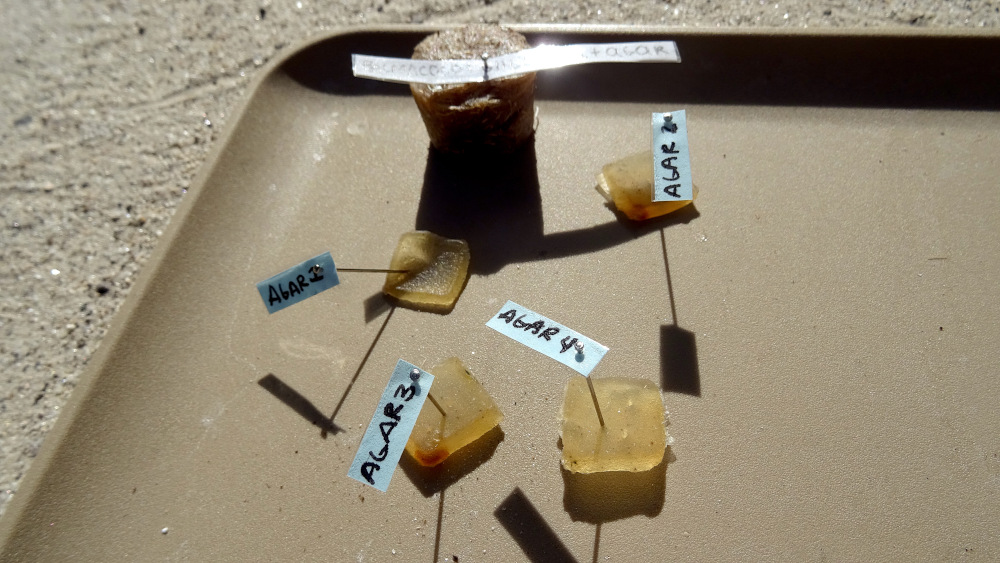
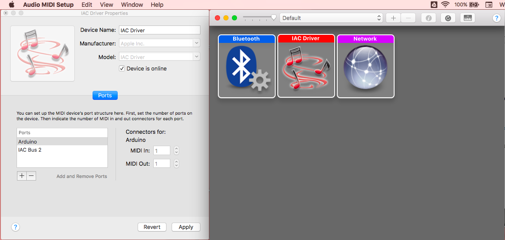
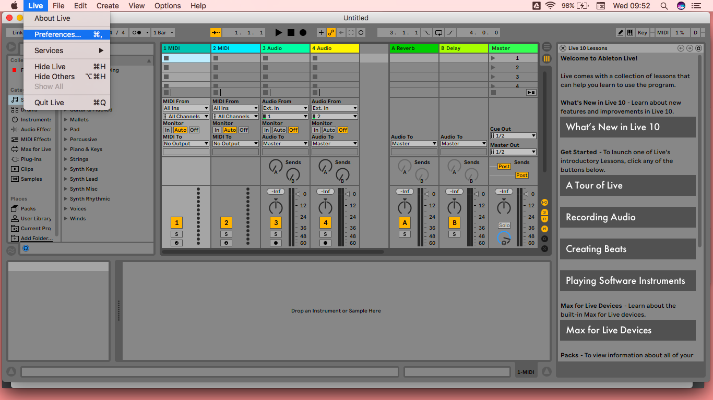
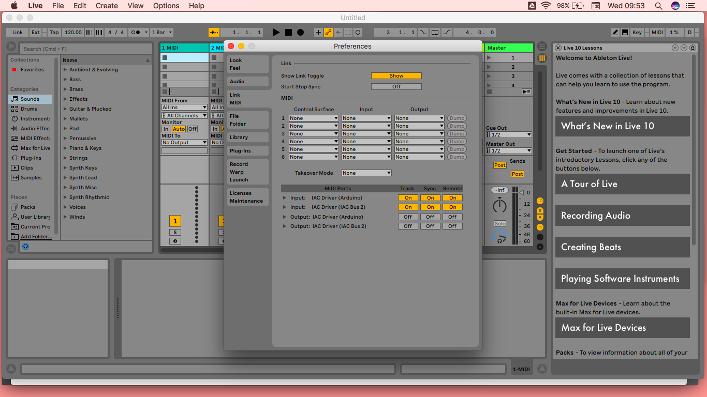

Tutorial
Bio MIDI
Controle MIDI com biomateriais
Utilizamos os bio materiais condutivos da pesquisa para fazer um instrumento MIDI e utilizar para performances audiovisuais. Este é um modo que temos de imaginar o futuro da eletrônica por meio dos biomateriais.
Bio MIDI
Passos
1
Circuito Eletrônico
2
Montagem dos Biomateriais
3
Configuração dos Softwares
Bio MIDI
Construção do Circuito Eletrônico
Materiais
- 1 Arduíno UNO
- 1 cabo USB tipo A-B
- 1 protoboard
- 5 resistores 1M ohm
- 15 jumpers/fios
- 1 array de leds endereçável (opcional)
Bio MIDI
Construção do Circuito Eletrônico
Preparação IDE Arduíno
- Arduino IDE
- Capacitive Sensor Library
- AdaFruit Neo Pixel Library
https://www.arduino.cc/en/main/software
https://playground.arduino.cc/Main/CapacitiveSensor
Bio MIDI
Construção do Circuito Eletrônico
Bio MIDI
Construção do Circuito Eletrônico
Bio MIDI
Montagem dos Biomateriais
Escolha um biomaterial condutivo para ser cada um dos cinco sensores. Conecte na ponta de cada cabo.
Bio MIDI
Configuração dos Softwares
Instalar os softwares abaixo:
- Hairless-MIDI Serial
- Ableton Live (pode usar 30 dias o trial)
https://github.com/projectgus/hairless-midiserial
Bio MIDI
Configuração dos Softwares - Mac
Configure o IAC Bus no AudioMIDI Setup (Device is online)
Bio MIDI
Configuração dos Softwares - Hairless
Selecione a porta USB em que se encontra o Arduíno, acione o serial-bridge e selecione a porta de saída do MIDI para o IAC Bus.

Bio MIDI
Configuração dos Softwares - Ableton
Vá as preferências do Ableton
Bio MIDI
Configuração dos Softwares - Ableton
Acione as entradas MIDI
Divirta-se!
Gracias!
Exportar para PDF